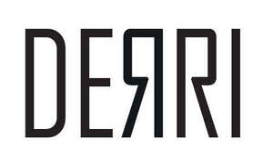

Trade Mark Journal No.2025/032 8 August 2025
UK00004241735 30 July 2025 (18,25,35)

- Class 18
- Leather Bags, Leather wallets, Leather suitcases, Leather pouches, Leather handbags, Leather purses,Leather coin purses,Leather and imitation leather,Belts,Boot bags,Bags for clothes,Leather laces,Leather cords,Leather thongs,Shoe bags for travel,Towelling bags,Leather shoulder straps,Cosmetic bags,Knitted bags,key cases,umbrellas, parasols and walking sticks.
- Class 25
- Footwear, leather footwear, boots, ankle boots, dress shoes, casual shoes, sandals, slippers, trainers, sneakers, men's shoes, ladies' shoes, children's shoes, leather boots, winter boots, work boots, Wellington boots, shoes for leisurewear, insoles, shoe soles, uppers for shoes, clothing, leather clothing, jackets, leather jackets, coats, trousers, shirts, t-shirts, hoodies, jumpers, sweaters, jeans, belts [clothing], socks, underwear, gloves [clothing], scarves, caps, hats, headwear.
- Class 35
- Retail services in relation to footwear; retail services in relation to leather shoes and boots; retail services in relation to leather goods; retail services in relation to bags; online retail services relating to footwear; online retail services relating to leather shoes and boots; online retail services relating to leather goods; online retail services relating to bags; wholesale services in relation to leather shoes; provision of an online marketplace for buyers and sellers of leather footwear and leather goods; advertising and marketing services; business management of retail stores.
Selim Vatansever